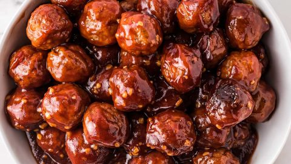

Crockpot Meatballs

Description
An easy appetizer, snack, or dinner. It really is a set it and forget it recipe.
What You'll Need
1 bag of frozen fully-cooked meatballs (32 ounce)
12 ounces of sweet BBQ sauce of choice
How to Make It
- Pour frozen meatballs into crockpot. Add sauce and jelly.
- Cover and cook for 2 to 3 hours on HIGH or 4 to 6 hours on LOW, until sauce is hot.
- That's it. Serve it straight from the crockpot, add some toothpicks, really whatever you want.